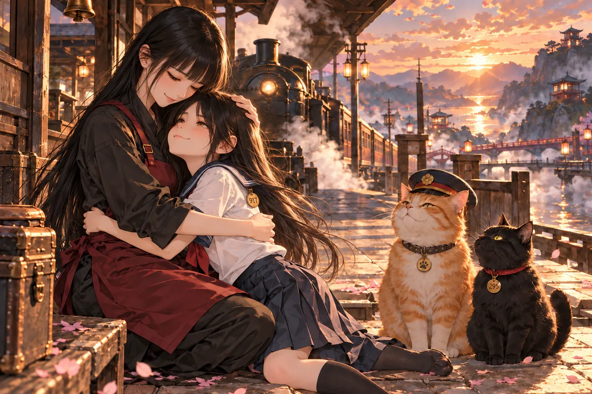

毛怪把木牌放上桌時，兩隻手還不太知道該往哪裡擺。
木牌碰到桌面，發出短短一聲。她嚇了一跳，立刻伸手去按，怕有人嫌她太吵。可是桌子太高，手臂伸直了仍不好使力，她只好把身子往前挪，和服的袖子便滑到盤子旁。
「放這裡就好。」小雨替她挪正木牌，「妳坐舒服一點，沒關係。」
毛怪點點頭，又把雙手藏回膝上。活著的時候，靠近有食物的桌子通常要挨罵。她不懂為什麼有人能坐著吃，自己卻只能在腳邊等，也不敢真的搶；只要聞到香味，尾巴就會自己動，最後往往連那一點高興都藏不住。
這張椅子卻是特地拉給她的。小雨看見她的腳懸著，還問需不需要換矮一點的。毛怪不知道怎麼回答，仰起臉看她，過了好一會兒才說，現在這樣就很好。
從前她只有爪子。現在，她穿著紫色和服，坐在椅子上，腳尖碰不到地面。店裡有烤肉的香氣，小雨走到桌邊時，她望著那條圍裙，抬頭笑了。
小雨看見她頸側的傷，拿菜單的手停了下來。
「是硫酸嗎？」
毛怪點頭。那天她只是走在路上。陌生人追著她喊，液體落在皮毛上的瞬間，世界忽然只剩下灼痛。她不知道自己做錯了什麼，也不知道逃到哪裡才不會再被叫回去。
可是說到穿圍裙的人，她的眼睛又亮了。
「我喜歡你們。你們都對我好。」
阿姨也是。阿姨會蹲在草地上，叫她過去，摸摸她的頭，替她想像一個有人接她回家的未來。最後一次見面，阿姨說明天帶雞腿。
毛怪沒等到那個明天。
她記得阿姨裝食物的袋子。袋口每次開啟，都會先有一點塑膠摩擦的聲音，她站得遠遠的，耳朵卻早已豎起來。有時阿姨還沒看見她，她就從草叢裡鑽出去，繞著那雙鞋跑一圈，再乖乖停下。阿姨總笑她急，手上卻從沒故意讓她等。
有別的人經過，她便往旁邊退。她分得出哪些腳步會停，哪些腳步會踢過來，也知道自己身上髒，不是人人都願意碰。只有那個人蹲下來時，她可以把下巴擱到膝上，不用一直留意身後。

說起這些，毛怪低頭摸自己的袖口。如今皮毛變成衣裳，她不必再抖掉雨水，可是阿姨會不會認不出她？她想問小雨，嘴張了一半，又先問，吃東西時弄髒盤子，會不會挨罵。
小雨把白盤往她面前放穩。
「這裡吃完有人洗。妳不用擔心。」
小雨把一枚遺願馬卡龍放到她面前。白盤裡只有一枚甜點。毛怪伸出手，碰了碰，才拿起來。
咬下去時，烤肉香散了。青草的氣味回來，風裡有她認得的聲音。
「毛怪……我好想你。」
那聲音一出來，她才發現自己一直在找它。店裡有人說話，門外也有人走路，每個聲音都很清楚，可是沒有一個叫她毛怪。她曾想過，是不是到了這裡，就得重新學一個名字。
阿姨的指尖碰到她耳後，她立刻往前靠。那是她最喜歡被摸的地方，從前每次摸到，她的眼睛都會瞇起來，頭跟著掌心轉，笨得讓阿姨笑個不停。這回阿姨卻哭了。毛怪聞著她袖上的氣味，不知道該怎麼把眼淚擦掉，只能貼得更近。
她想說自己現在坐得上椅子了，也有人給她乾淨的盤子。她想讓阿姨別難過，卻又怕說完這些，阿姨會以為她不需要那個家。於是她等到那雙手抱穩，才小聲問下輩子的事。
這一次，她不只是想知道明天有沒有雞腿。
阿姨抱住她。毛怪終於不用坐得像個人，也不用小心把手放好。她可以把整個自己交給這雙手。
「下輩子如果我還是狗，可以跟你一起生活嗎？」
阿姨哭得答不成完整的句子，只能一次又一次點頭。
「當然好啊。」
毛怪靠著她，安靜地聽。阿姨的手仍撫著她的背。她閉上眼，不再問了。
小樂進門先笑，遞木牌時笑，連說想用餐都像在怕打擾別人。
她挑了最靠邊的位置。椅子往外拉時碰到自己的鞋，她忙低頭調整，連那點摩擦聲都讓她不好意思。小雨問要不要換到裡面，那裡寬一點，她說不用，這裡很好；水送來，她說謝謝；問水會不會太燙，她又說不會。
每一句回答都很快，快得沒有留給自己感覺的時間。杯壁其實燙著指腹，她握了片刻，才偷偷把手移到杯口下面。小雨看見了，沒有指出來，只在桌上多留一隻空杯，說可以倒過去放涼。
小樂抬頭，仍想說謝謝。小雨卻已轉身去端菜，她嘴邊那兩個字便沒來得及送出去。
她低頭看水。有人替她想好了這件小事，她竟先擔心，自己是不是看起來很難照顧。
老闆看了一眼，低聲叫小雨。小雨順著他的目光看過去，女孩已經坐好，肩膀收得窄窄的。她的笑容很熟練，熟練得讓人不知道應該問什麼。
壽司端上桌，小樂愣住。
「這裡不是燒肉店？」
「老闆喜歡燒肉，所以取這個名字。」小雨把筷子擺正，「妳喜歡什麼，都可以吃。」
小樂望著盤子，像第一次聽見有人這樣說。
菜單原本擺在她右手邊，她卻沒有翻。過去一起出門吃飯，總是別人先說去哪，她便答好。別人問有沒有不能吃的，她說沒有；問會不會太貴，她說還好。久了，連她自己都分不清，這些回答裡究竟有多少是真的。
壽司盤推近時，她先看到米粒上細細的光。那是她曾在店外站著看過、最後又跟著男友去吃燒肉的東西。當時他興致很高，談起哪家的肉比較好，說下次還可以揪朋友。她聽著，便把原本想指的招牌放過了。
小雨沒有問她為什麼喜歡，也沒要她給出一個值得換餐廳的理由，只說喜歡什麼都可以吃。小樂望著筷子，手指搭上去又收回，竟需要練習，才敢讓自己的目光停在那盤食物上。
老闆送來遺願馬卡龍，輕聲念道：「如入火聚，得清涼門。」
甜味融化。再抬眼，她站在籃球場邊。球網被風吹動，男友朝她走來，問她為什麼一句話也沒留下。
她張口便是對不起。
男友站在球場邊，球鞋還是她記得的那雙。她認得鞋側一塊磨白的地方，從前曾蹲下來替他擦過。風把遠處的球聲帶過來，她恍惚以為一切都能照常，他打完球，她遞上水，等他問晚餐要吃什麼，再把那個問題讓回去。
可是他沒有伸手接水。她手裡也沒有水。
她說對不起，他便看著她，像第一次聽清這句話裡還有別的意思。小樂把衣角拽緊，想解釋自己沒有故意讓他難過。嘴裡卻越解釋越亂，幾句話繞回同一個地方，最後連呼吸也急了。
他想碰她，她先縮了一下，隨即又為這個動作道歉。
「妳不用每一句都說這個。」
她望著他。要是不說對不起，接下來該說什麼？這個問題比承認難過還讓她害怕。球場的風一直吹，她站了很久，才勉強把手從衣角放開。
對不起沒有忍住，對不起讓你不開心。那天忘記帶鑰匙的人明明不是她，最後她仍然替所有人的情緒道歉。許多次，她想說自己也很難過，話到嘴邊，又換成了沒關係。
男友沒有讓她繼續。
「妳委屈了。可是妳的不開心，誰來理解？」
小樂的笑終於撐不住。她低下頭，連哭都還想放輕聲音。
「其實……我一直不喜歡吃燒肉。」
她等著他失望，等著這句話被當成任性。等來的卻是一雙把她抱住的手。
「我想吃壽司。」
「好。我們吃壽司。」
小樂把臉埋在他肩上。這回，她沒有再說對不起。
三途川車站的月臺上，有一位根本不想理逗貓棒的站長。
小雨原本以為，引渡亡者的地方會很冷清。走進來才知道，月臺上忙得像下班時間的車站，問路聲、行李拖過地面的聲音混在一起，偶爾還有一聲不耐煩的貓叫。不同的是，大家低頭找的不是路線，而是自己的車票。
一位乘客捏著票，看了半天仍找不到貓，便問小雨站務人員在哪。她指向橘貓，對方沉默了一下，又看老闆。老闆十分認真地點頭。
小雨忍著笑，將逗貓棒拿出來。橘貓眼皮都不太想抬，直到棒子晃到牠面前，才伸爪按住，接著望向她，像已完成一次勸導。
她趕緊把東西收好。那位乘客反倒跟著鞠了一個躬。
橘貓坐得四平八穩。小雨揮了兩下，牠只斜眼瞥過來，像在評估這位訪客是否妨礙公務。老闆介紹黑貓貢丸君，二九五號引渡貓。小雨正要蹲下和黑貓打招呼，站內廣播便響了。
蒸汽越過鐵軌。地府號緩緩進站，一隻隻掛著號碼牌的貓往車門走去。亡者下車，找自己的號碼，再跟著那些毫不遲疑的小背影前行。
貢丸君走出去前，還回頭看了老闆一眼。小雨蹲著，不知道該叫牠名字還是號碼，剛開口，黑貓已經俐落鑽進人群。牠的步子不大，卻沒有半點猶豫，一位把車票拿反的老人跟在後面，走得慢，牠便停下來等。
小雨看了片刻，忽然沒那麼想笑了。
列車門邊，有的人一落地就問接下來怎麼辦，有的人站著不動，手還握在行李把上，像只要不往前，自己就仍能搭下一班車回去。那些貓不講大道理，只在前面走兩步，再轉頭看一眼。
老闆提醒她，別站得太近車門。蒸汽從底下升起，濕濕的，她往後讓，眼睛仍追著下車的人。會是誰呢？她沒有在這裡等過訪客，竟先開始擔心，自己的圍裙是不是沾了店裡的味道。
老闆說，今天有貴客。
貴客穿水手服，站在車門旁，直直看著小雨。
「妳認不認得我？」
小雨還來不及回答，少女的眼神便讓她胸口一緊。那種等著她回家、又裝作沒有在等的神情，她怎麼會不認得。
「咪咪？」
名字從嘴裡出來，少女的臉便變了。剛才裝得很端正的表情，一下垮成小雨熟悉的撒嬌；連肩膀往前縮的方式，都像從前在她腿上踩奶，要她別再起身。
小雨伸出手，卻不敢立刻碰。她記得最後一次把貓放回地上，還叮嚀不準上餐桌。那是一句太平常的話，說的時候根本不需要記住，如今想起來，卻連自己的聲音都聽得清楚。
少女向前一步，她便再也忍不住。車站裡有人側身讓開，老闆站到一旁，替她們留出地方。小雨抱住她，先聞到蒸汽和衣服的味道，接著才想起，這裡的貓可以變成人。
可是抱著自己的力道沒有變。
她本想問大寶怎麼沒照顧好，話還沒出口，就聽見咪咪那句太想妳。小雨喉嚨緊了，責怪誰的話都說不出來。
咪咪撲進她懷裡。
小雨死後，大寶照顧著貓。飯放在原來的地方，水也換得勤，可是咪咪總等著另一個腳步聲。她吃得越來越少，睡得越來越久。有一天，就沒醒來。
「我太想妳了嘛。」
小雨抱緊她，手指埋進如今變成長髮的柔軟裡。她不知道怎麼責怪這樣的想念，只好把道歉吞回去，摸了摸咪咪的頭。
少女舉起九一七號牌，帶著一點得意。
「我現在有工作喔。妳下班要常來找我玩。」
列車又鳴了一聲。小雨答應了，說完還不放心，又叮嚀咪咪，要乖乖吃飯。
